Odo lleva el registro de tus turnos de reparto y de viajes, los kilómetros que manejas por trabajo y tus gastos de trabajo. A la hora de declarar, te da todo lo que necesita tu contador o myTax. Configurarlo toma unos 5 minutos.
La lectura del odómetro de tu auto (el número de km en el tablero)
No tienes que descargar nada de la App Store ni de Google Play. Odo se abre desde un enlace y luego queda en tu pantalla de inicio como una app normal. Es gratis.
1
Abre el enlace de Odo
En tu celular, abre inova07.github.io/odo.
iPhone: usa Safari (la brújula azul). Android: usa Chrome o Samsung Internet.
Empieza un recorrido de bienvenida corto. Primero elige tu idioma y luego toca Muéstrame u Omitir.
Hazlo una sola vez. Después, Odo se abre con un toque, en pantalla completa, y funciona sin señal.
iPhone (Safari)
Toca el botón Compartir abajo en la pantalla (un cuadro con una flecha hacia arriba).
Desliza hacia abajo y toca Agregar a inicio.
Toca Agregar arriba a la derecha.
De ahora en adelante, abre Odo desde el nuevo ícono Od en tu pantalla de inicio.
Android (Chrome)
Toca el menú ⋮ (tres puntos, arriba a la derecha).
Toca Instalar app o Agregar a la pantalla principal.
Toca Instalar o Agregar.
Abre Odo desde el nuevo ícono en tu pantalla de inicio.
Android (Samsung Internet)
Toca el menú ≡ (tres líneas, abajo a la derecha).
Toca Añadir página a y luego Pantalla de inicio.
Toca Añadir.
¿Ves un pequeño ícono de instalar en la barra de direcciones? Tocarlo hace lo mismo.
💡 ¿No encuentras el botón? Guarda Odo como marcador. iPhone: Compartir → Agregar marcador. Chrome: ⋮ → toca la estrella. Samsung Internet: ≡ → Añadir página a → Favoritos.
3
Crea una cuenta gratis
Sin cuenta, tus registros viven solo en este celular. Con una, Odo respalda todo y puedes iniciar sesión en un celular nuevo y recuperarlo.
Toca el ícono de persona arriba a la derecha.
Toca Cuenta nueva.
Escribe tu correo y crea una contraseña (al menos 6 caracteres).
Toca Crear cuenta. Si Odo te lo pide, abre el correo de Odo y toca el enlace para confirmar, y luego inicia sesión.
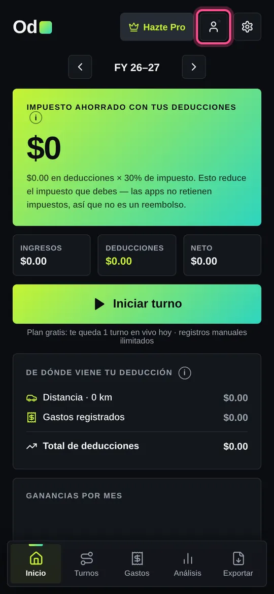
1. Toca el ícono de persona
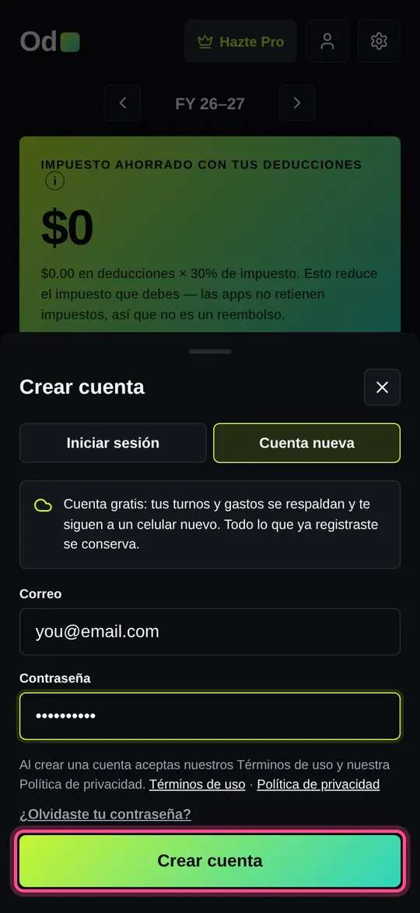
2. Cuenta nueva → Crear cuenta
💡 ¿Celular nuevo? Abre el enlace, toca el ícono de persona, elige Iniciar sesión y usa el mismo correo y contraseña. Tus registros vuelven. Un punto verde en el ícono de persona significa que está respaldado.
4
Cuéntale a Odo sobre ti (1 minuto)
Toca el ícono de engranaje arriba a la derecha para abrir Ajustes.
Tus vehículos: elige Auto, Moto o Bici.
Región: déjala en Australia.
Ingresos totales esperados este año: un cálculo aproximado de todo lo que ganarás, incluido cualquier otro trabajo. Odo lo usa para calcular tu tasa de impuesto.
Toca Guardar ajustes abajo.
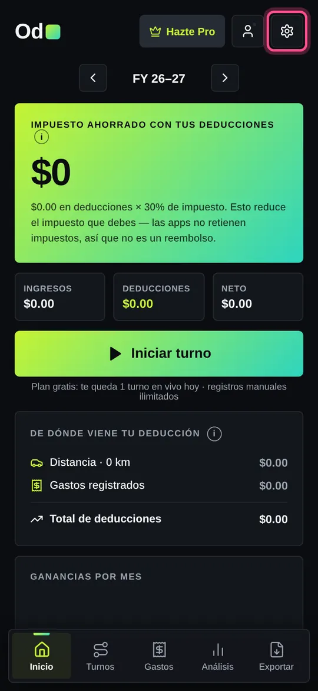
1. Toca el engranaje
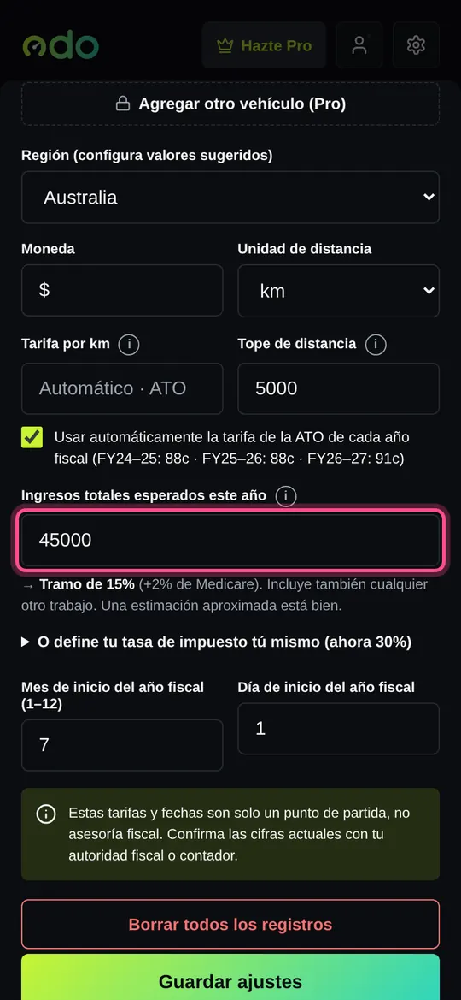
2. Escribe tus ingresos esperados
💡 ¿Andas en bici o moto? Odo cambia al Modo repartidor. La tarifa por km es solo para autos, así que tu deducción viene de tus gastos: celular, reparaciones, baterías, mochilas y equipo.
5
Registra cada turno
Tus kilómetros suelen ser tu mayor deducción. Solo son dos toques por turno.
Al empezar: toca Iniciar turno, elige la app (Uber, DoorDash…), escribe el número del odómetro y toca Empezar. Puedes cerrar Odo; el temporizador sigue.
Al terminar: toca Terminar turno, escribe el nuevo número del odómetro y cuánto ganaste, y toca Guardar turno.
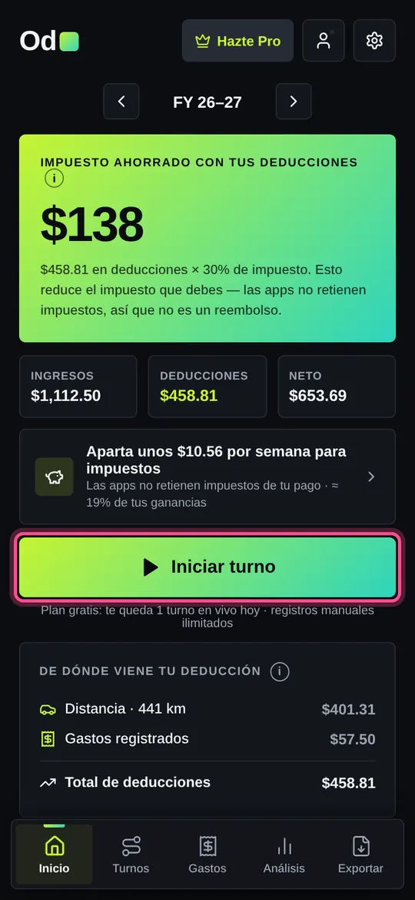
1. Toca Iniciar turno
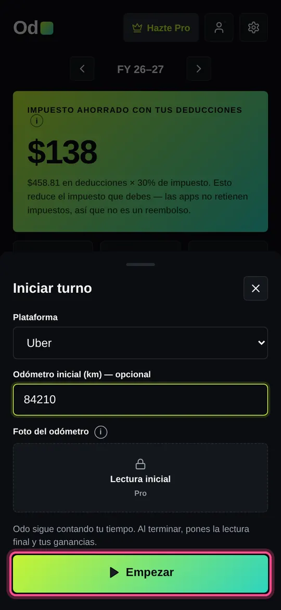
2. Odómetro → Empezar
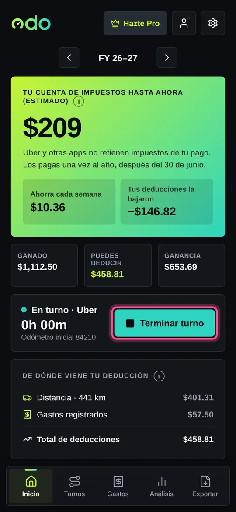
3. Después: Terminar turno
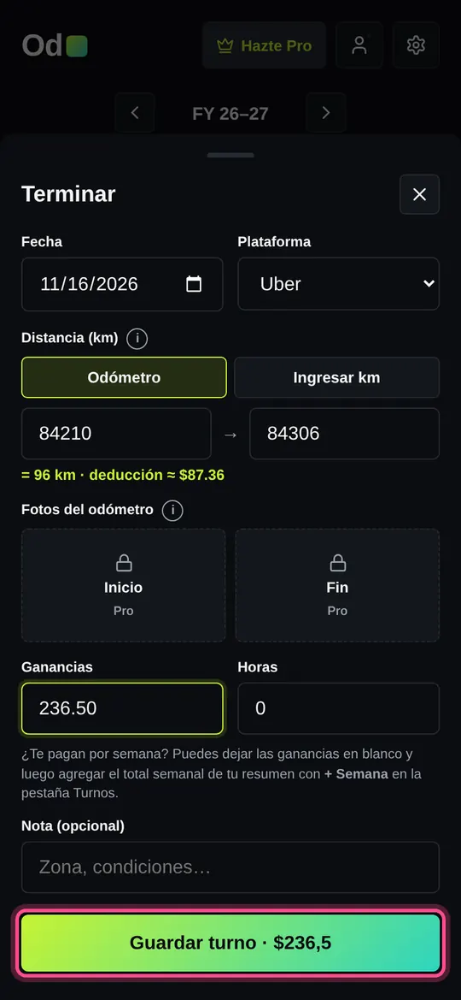
4. Odómetro final + ganancias → Guardar
PROTómale foto a tu odómetro
Con Odo Pro, toca Lectura inicial al empezar un turno para tomarle foto al odómetro, y agrega una foto de Fin al terminar. Cada foto se guarda con el turno, con fecha y hora, y se respalda en tu cuenta.
Por qué importa: la ATO puede pedirte que muestres cómo calculaste tus kilómetros de trabajo, y debes guardar tus registros 5 años después de declarar. Una foto al inicio y al final de cada turno es una prueba sólida y difícil de discutir. Además, nunca pierdes ni escribes mal una lectura, aunque cambies de celular. A la hora de declarar, Exportar → Descargar fotos le da a tu agente fiscal todas las fotos en un solo ZIP.
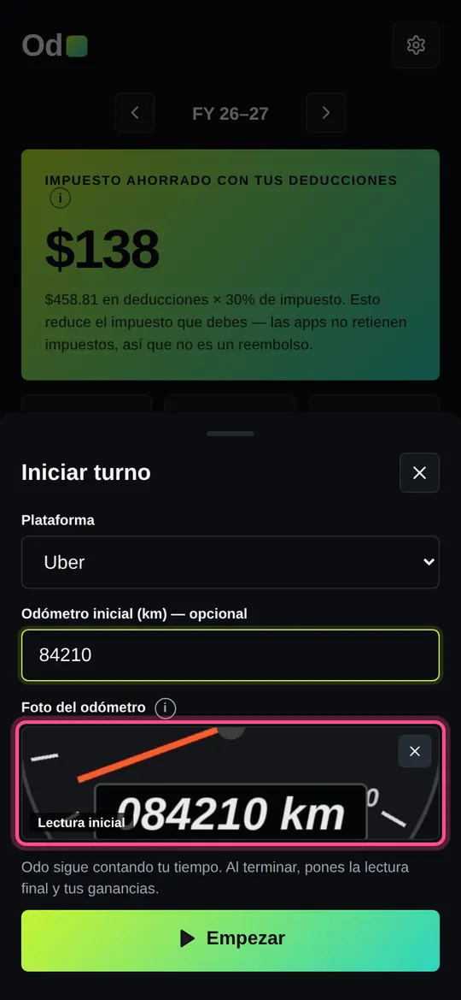
La foto del odómetro, guardada con el turno
💡 ¿Olvidaste empezar? Pestaña Turnos → + Turno y escríbelo después. ¿Te pagan por semana? Pestaña Turnos → + Semana y copia el total de tu resumen semanal. Solo cuentan los km de trabajo: el viaje de tu casa al primer pedido puede no contar.
6
Agrega tus gastos de trabajo
Ve a la pestaña Gastos y toca Agregar gasto.
Elige una categoría (por ejemplo Celular e internet) y escribe el monto.
Mueve Uso laboral a cuánto es para trabajo. ¿Usas el celular 70% para repartir? Pon 70%.
Toca Guardar.
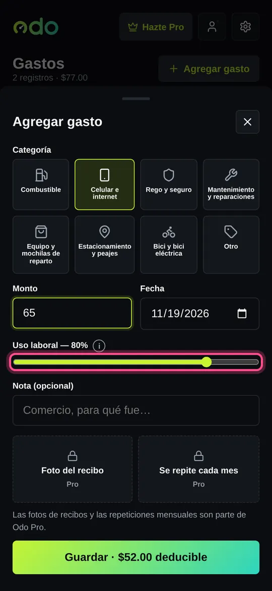
Indica cuánto es para trabajo
⚠️ ¿Manejas un auto? No agregues combustible, rego, seguro ni mantenimiento. La tarifa por km de la ATO (91c por km en 2026–27) ya los incluye. El estacionamiento y los peajes sí puedes agregarlos.
7
Revisa tus números
Impuesto ahorrado con tus deducciones
Cuánto menos impuesto pagarás gracias a tus deducciones de trabajo. No es un reembolso: las apps no retienen impuestos de tu pago, así que normalmente igual deberás algo.
Ingresos / Deducciones / Neto
Lo que ganaste, lo que puedes deducir y, más o menos, tu ganancia.
Aparta unos $… por semana
Ahorra eso cada semana para que la cuenta de impuestos de julio no te tome por sorpresa.
Tu año de un vistazo
💡 Toca cualquier ícono ⓘ para una explicación rápida.
8
A la hora de declarar: exporta
Después del 30 de junio, abre la pestaña Exportar.
Descarga tus turnos, gastos y el resumen. Se abren en Excel o Google Sheets.
Envíalos a tu agente fiscal o usa los totales en myTax.
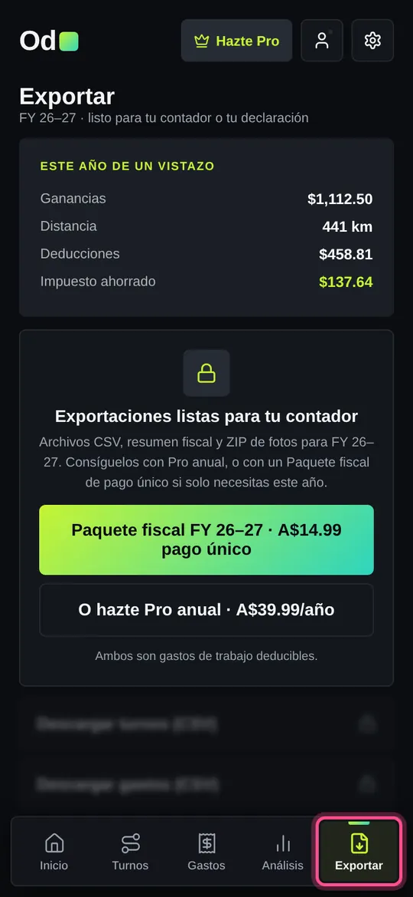
Todo lo que necesita tu contador
💡 Las exportaciones vienen con Pro anual, o compra un Paquete fiscal de pago único (A$14.99) para un solo año. Ambos son gastos de trabajo que puedes deducir.
¿Necesitas ayuda?
Guía completa: Ajustes → Cómo usar Odo, o la guía en línea.
¿Preguntas? Ajustes → Ayuda y soporte. Si iniciaste sesión, te respondemos ahí mismo en la app.
Odo es una herramienta para llevar registros, no asesoría fiscal. Confirma las reglas actuales en ato.gov.au o con un agente fiscal registrado. · Actualizado el 17 de noviembre de 2026